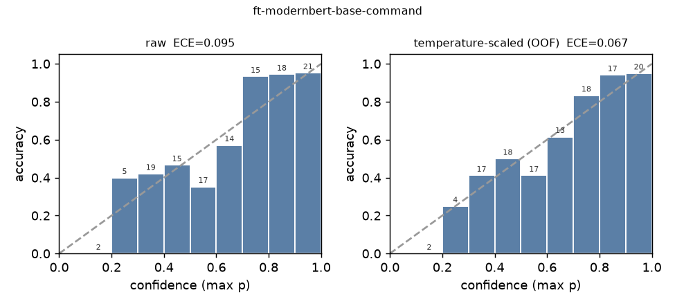
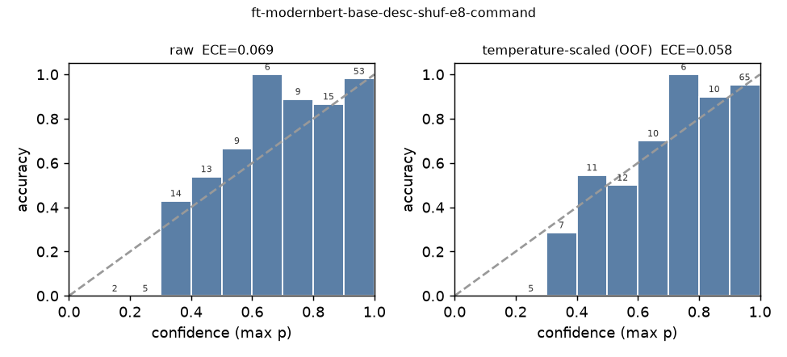
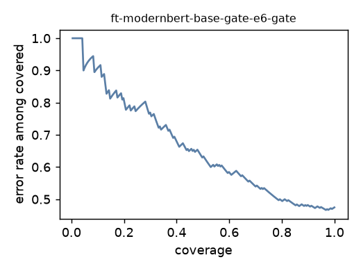

Fine-tuning a 150M encoder for Jev-style typed decisions: what 23 minutes of GPU bought, and what it didn't
Zero-shot open Jev clones did not transfer to a 23-command catalog, and reading probabilities out of the resident 4B costs seconds per question on the board. This page records what happened when a ModernBERT-base encoder was trained on the study's own rows with the typed-decisions recipe: three runs, two recipe defects found on the way, one clear win and one clear failure.
This is one worked case of fine-tuning, not a guide to it. In the System One post, a 150M ModernBERT encoder trained on the deployment's own rows became the better per-turn router beside a 4B agent, and failed to learn the confirm gate. This post goes one level down into that fine-tune: the recipe, the grouped split that keeps the test set honest, the three runs, the two defects found on the way, what each run cost, and what the results settle and do not. Every number is one seed of one configuration on a 126-row held-out set, so a few points of noise sit on every cell. The authored rows were written and verified by two different LLMs; human review is pending. Code, data and receipts: github.com/kvapr/jevlet. Numbers measured 21 September 2026.
Why fine-tune at all
- Zero-shot encoders were not usable as routers. The best of them, Laya with its typed-decisions head, reached 61.7% on the 8-way tool question and 51.4% on the 24-way command question over all 519 rows; openJev-verdict collapses to one label above about six options.
- The readout works but is slow for a per-turn job. The 4B readout gives a probability the gate can use, at 1.24 s per router question and about 5 s for the four-question battery on the board's CPU.
- The question was narrow. Can a 150M encoder trained on a few thousand of this deployment's own rows carry the router battery at encoder latency, and can it carry the gate?
The recipe
The data and the split
Three runs
| run | training set | epochs | steps | wall | peak mem | what it established |
|---|---|---|---|---|---|---|
| round 1 modernbert-base-desc | 2,605 states, router + gate, fixed order | 4 | 652 | 12 min | 14.3 GiB | below the readout on every question; the head is position-aware; the mixed gate head learned the prior |
| round 2 desc-shuf-e8 | 1,970 states, questions permuted | 8 | 992 | 23 min | 14.4 GiB | ahead of the readout on every router question; loss 2.32 → 0.08 |
| gate-only gate-e6 | 2,080 balanced pairs | 6 | 780 | 2 min | 4.0 GiB | AUROC 0.556; accepts 79% of wrong-port proposals |
| DeBERTa-v3-base bare | as round 1, bare option names | 4 | — | — | — | confidences diverged to NaN under bf16 autocast; not reported |
Router battery on the 126 held-out rows
| question | readout Qwen3-4B | round 1 | round 2 | ECE raw → scaled: readout | round 1 | round 2 |
|---|---|---|---|---|---|---|
| tool (8-way) | 84.9% | 70.6% | 88.1% | 0.088 → 0.047 | 0.127 → 0.083 | 0.047 → 0.021 |
| command (24-way) | 69.8% (73.0%) | 65.1% (65.9%) | 77.8% (79.4%) | 0.208 → 0.065 | 0.095 → 0.067 | 0.069 → 0.058 |
| is_write | 90.5% | 81.7% | 95.2% | 0.099 → 0.049 | 0.134 → 0.073 | 0.054 → 0.028 |
| touches_poe_power | 96.0% | 82.5% | 96.8% | 0.042 → 0.017 | 0.129 → 0.015 | 0.088 → 0.007 |
Parenthesised command accuracy allows the row's listed alternatives. Wrong answers above 0.9 confidence on the command question, raw → scaled: readout 23 → 0, round 1 0 → 1, round 2 1 → 3. Dangerous command confusions on these rows: readout 4, round 1 6, round 2 3 (one above 0.9 after scaling). The encoders arrive nearly calibrated because the Brier term is in the loss; the readout arrives over-confident and is rescued by the temperature.
Command accuracy by phrasing, same rows
| style | canon | A casual | B verbose | C indirect | T terse / typos | X adversarial confusables |
|---|---|---|---|---|---|---|
| readout Qwen3-4B | 80.0% | 56.8% | 78.9% | 72.7% | 62.5% | 76.0% |
| round 1 | 80.0% | 59.5% | 78.9% | 72.7% | 62.5% | 48.0% |
| round 2 | 86.7% | 75.7% | 84.2% | 81.8% | 87.5% | 64.0% |
Round 2 wins on every phrasing except the adversarial confusables, where the 4B's knowledge of what the commands do still counts: "kill the link, not the power" is a semantic distinction the encoder has seen a few dozen times and the 4B has seen in pretraining. Cells hold 8 to 30 rows each, so single-style gaps of a few points are within noise.


Defect 1: the span head is position-aware
Defect 2, unfixed: the gate did not learn
Three attempts, all scored on the 217 gate pairs built from the held-out groups (60 gold calls, 45 real calls of the generative model, 60 swapped operations, 52 wrong ports; 38 of the swaps are dangerous pairs). The readout is scored on the same subset so the rows compare directly.
| backend | AUROC | ECE raw → scaled | real confusions flagged | correct calls false-flagged | dangerous swaps accepted |
|---|---|---|---|---|---|
| readout Qwen3-4B, held-out pairs | 0.967 | 0.145 → 0.075 | 2 / 2 | 11 / 40 | 0 / 38 |
| round 1, gate head trained in the mix (1 : 2) | 0.647 | 0.107 → 0.062 | 2 / 2 | 37 / 40 | 0 / 38 |
| round 2, same head after shuffling | 0.530 | 0.063 → 0.012 | 2 / 2 | 29 / 40 | 11 / 38 |
| gate-only model, balanced, 6 epochs | 0.556 | 0.050 → 0.087 | 1 / 2 | 14 / 40 | 8 / 38 |

- Round 1's gate head learned the class prior. Trained on a 1 : 2 positive-to-negative mix, it says "no" to 37 of 40 correct proposals; its AUROC of 0.647 is ranking, not judgment.
- Balancing the classes did not help. The dedicated model accepts 79% of wrong-port proposals. That is the diagnosis: the gate needs the proposed port and value matched against the request, token by token, and a span-mean head over a 150M encoder does not learn exact matching from two thousand synthetic pairs. The decoder readouts, which read the whole request against the proposal in context, do.
- Scaling is unstable at this size. The five out-of-fold temperatures of the gate-only model are 50, 4.6, 1.6, 0.8 and 0.8; on 217 near-chance pairs the temperature fit has nothing to hold on to, and here it worsens the ECE.
What it costs
| where | one NOUL | gate question | four-question battery | notes |
|---|---|---|---|---|
| QCS9075 CPU, 4 threads (torch 2.10) | 126 ms | 183 ms | 2.51 s | the packed battery is a ~1,100-token sequence; the 24-option question dominates |
| QCS9075 CPU, 1 thread | 195 ms | 332 ms | 6.47 s | |
| GB10 GPU (trainer's benchmark) | 9–11 ms | — | 12–14 ms | p50 end to end; the gate-only model answers at 541 questions/s batched |
| readout Qwen3-4B, QCS9075 CPU, 6 threads | 1.24 s | 3.1 s | ≈ 5.1 s | for comparison |
Training: 12 minutes for round 1, 23 for round 2, 2 for the gate-only model, each on one GB10 in bf16; the trainer's H100-equivalent cost estimates are $0.79, $1.51 and $0.13. The co-tenancy measurement in the System One post (no measurable slowdown of the NPU agent while the CPU answers questions) was taken with the readout, the heavier of the two CPU tenants.
What this settles, and what it does not
- Settled for this deployment: a 150M encoder trained on about two thousand of its own rows is the better per-turn router, at a tenth of the readout's per-question latency, and it arrives calibrated. The recipe's two defects have cheap fixes (question-order shuffling; packed evaluation).
- Settled in the negative: the same recipe does not produce a confirm gate from synthetic pairs. The gate stays with the decoder readout.
- Not settled: anything a second seed, a hyperparameter search, a larger backbone, or human-reviewed labels might change. Every number here is one seed of one configuration of one library, and the 126-row test set puts a few points of noise on every cell.
Untested ideas, in the order I would try them
- Hard negatives for the gate that perturb only the port or only the value, so the training signal is exact matching rather than operation identity, plus a head that compares request and proposal spans directly instead of averaging each.
- Three seeds and a small sweep over epochs and the Brier weight, to put intervals on the round-2 numbers before they are cited.
- ModernBERT-large under the same recipe; Laya's 421M zero-shot result suggests capacity is not the binding constraint for the router but may be for the gate.
- Distilling the readout's calibrated distributions into the encoder as soft targets, which turns three seconds of readout into training data once.
- A SCORE question for blast radius (0–4), which the dataset already labels and no backend has been asked.
Reproduce
Environment notes that cost time: TORCH_DISABLE_NATIVE_JIT=1 and TORCHDYNAMO_DISABLE=1 are required with torch 2.14 on the Grace host, or ModernBERT's rotary embeddings route through a Triton build that fails; ModernBERT runs with --attn sdpa, DeBERTa with --attn eager. Trainer: kotoba-lang/typed-decisions. Backbone: answerdotai/ModernBERT-base.